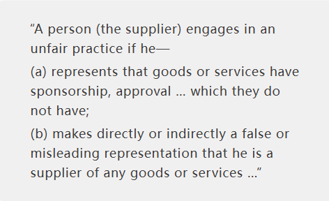
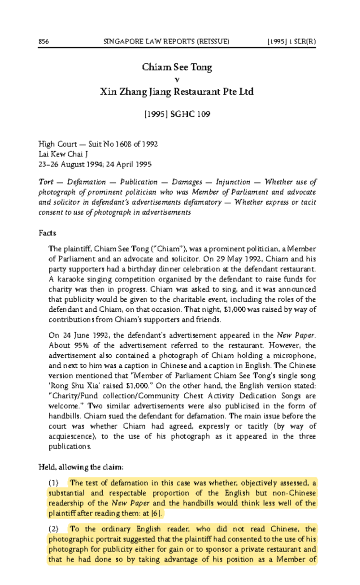
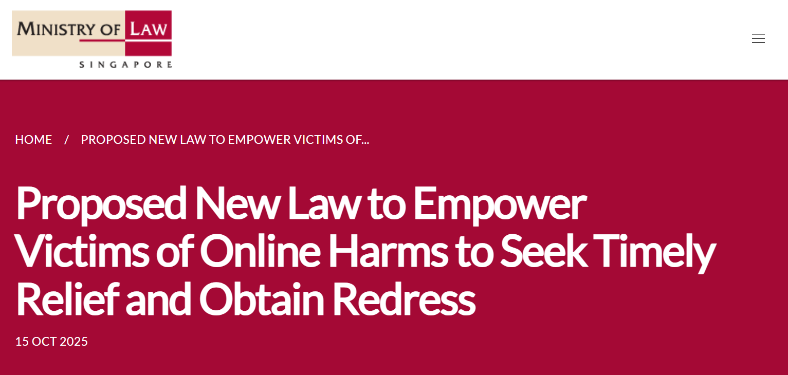

Even Jensen Huang Is Being Fake-Streamed? How Does the United States Regulate AI Piracy Streaming?
Key Points
- AI-cloned livestreams have evolved from simple rebroadcast scams into highly realistic synthetic impersonations of public figures.
- Unauthorized reuse of old footage is generally addressed through copyright law, false endorsement rules, consumer protection, and personality-rights doctrines.
- China, Singapore, and the EU have moved relatively quickly on deepfake-specific regulation, while the United States still relies mainly on fragmented state-level protections.
- The persistence of fake livestreams reflects not a lack of law, but slow enforcement, uneven platform implementation, and mature gray-market production chains.
1. Event Background: Celebrities and Stars Encountering AI "Cloned" Livestreams Spark Heated Discussions
During NVIDIA’s highly watched GTC conference, YouTube users were presented with what appeared to be an official "NVIDIA Live" broadcast featuring a lifelike Jensen Huang speaking, blinking, and promoting a supposed cryptocurrency giveaway through an on-screen QR code. Reports indicated that the fake stream briefly drew far more viewers than the authentic keynote, highlighting how convincing and commercially effective this form of deception has become.

Impersonation livestreams are not new. Earlier scams around Apple launch events, SpaceX, and Elon Musk typically relied on stitched-together archival footage from interviews or past appearances. What has changed is that advances in AI have pushed such fraud into a new phase: instead of merely reusing old material, bad actors can now synthesize highly realistic images, voices, and expressions that blur the line between edited footage and fabricated presence.
Recent reports suggest that celebrities in China may also have encountered similar forms of AI-enabled impersonation. These incidents vividly illustrate a widening regulatory deficit created by rapid technological change.
Two related but legally distinct practices need to be separated. The first is unauthorized rebroadcasting of old material: clipping and repackaging another person’s videos or livestreams, then relaunching them on other platforms for traffic or profit. The second is AI-generated fake rebroadcasting: directly synthesizing someone’s face and voice to create counterfeit livestreams, fake product endorsements, or sham press events. They may look increasingly similar on screen, but they cross different legal and regulatory boundaries.
Against that backdrop, the current legal and policy frameworks in China, Singapore, Europe, and the United States show both growing awareness of the problem and major gaps in practical enforcement.
2. Unauthorized Rebroadcasting of Old Content: How Would the Unauthorized Reuse of Content Be Penalized in Singapore, China, Europe, and the United States Respectively?
When old interviews, speeches, or livestream footage are cut up and reused without permission, most jurisdictions already have legal tools to respond. The main routes are copyright law, false endorsement and unfair advertising rules, and personality-rights protections where the reused footage falsely implies a celebrity’s support or participation.
Singapore: Copyright + Consumer Protection, Emphasizing Platform Responsibility
Under Singapore’s Copyright Act 2021, copyright arises automatically once an original work is fixed in a tangible medium; registration is not required. In practice, the copyright in a recorded interview, event video, or livestream usually belongs to the producer or commissioning entity unless a contract provides otherwise. If a third party clips such footage and uses it in a commercial livestream, especially for sales promotion, it is difficult to characterize that use as fair dealing when the use is unauthorized, commercially motivated, extensive, and harmful to the market for the original work.

Singapore’s Consumer Protection (Fair Trading) Act adds a second layer of liability. If a merchant or account operator uses a celebrity’s old footage in a way that causes consumers to believe the person has sponsored, endorsed, or approved goods or services, that may amount to an unfair practice based on false or misleading representations.
Singapore case law also shows a willingness to treat unauthorized commercial use of a person’s image as a serious wrong. Courts have recognized that the public may reasonably infer endorsement or affiliation when a well-known person’s likeness appears in advertising without permission. Notably, past cases also established that liability may extend beyond the direct advertiser to the publishing platform or information intermediary that disseminates the infringing material, laying an important foundation for platform responsibility.
Another notable case is Hanis Saini Hussey v Integrated Information [1998] SGHC 219. Hanis Hussey, a well-known fashion model in Singapore, had her image taken from an AIDS awareness poster and used without permission in an advertisement for an escort service published in the Singapore Yellow Pages. The court held both the escort agency (the direct infringer) and the publisher of the Yellow Pages (the platform) liable. This early decision established an important foundation for platform accountability in cases of unauthorized commercial use of a person's likeness.
China: Copyright + Personality Rights + Market Supervision
In China, unauthorized rebroadcasting of others’ content is primarily governed through copyright law. Audiovisual works, including dramas, recorded livestreams, and short-form clips, are protected under the Copyright Law. Although the law contains fair-use provisions, Chinese practice has generally treated unauthorized commercial clipping and redistribution of video content as infringement.
Judicial practice has repeatedly confirmed that platform-hosted sliced or excerpted videos can infringe copyright on a large scale. That makes copyright the central legal basis for tackling unauthorized reuse of old footage.
For example, in 2024, the Shanghai Intellectual Property Court ruled in Youku v. Kuaishou, finding that a large number of short clips from the drama "Empresses in the Palace" uploaded by Kuaishou users infringed copyright, and ordered the platform to pay RMB 1.6 million in compensation.
At the same time, personality rights provide additional remedies. If edited material distorts the original meaning and harms a person’s reputation, the affected individual may seek cessation of infringement, apology, and other civil relief under the Civil Code. Where fake livestreams or repurposed clips are used to promote goods, China’s advertising and market-supervision regime may also come into play, because unauthorized celebrity endorsement can amount to false or misleading commercial promotion.
European Union: Automatic Takedown of Infringing Content
The European Union has long maintained a strict copyright framework for unauthorized reuse of audiovisual material. Under Article 17 of the 2019 Copyright Directive, large content-sharing platforms bear enhanced responsibility for user uploads. In broad terms, platforms must obtain authorization for protected works or take measures to ensure unauthorized content is not made available, and they must act quickly after notice.
As a result, platforms operating in the EU are under strong pressure to filter infringing uploads or cooperate with rights holders through content-recognition systems. This creates a relatively robust legal basis for tackling unlicensed livestream clips and reposted segments before or shortly after they spread.
In practice, major video platforms operating in Europe, such as YouTube, have implemented content fingerprinting and copyright detection systems (e.g., Content ID) to automatically identify and block unauthorized uploads of copyrighted clips.
United States: Libertarian Approach to Copyright Protection, but Strictly Cracks Down on Commercial Misappropriation
The United States relies heavily on the DMCA notice-and-takedown system. When a copyright holder notifies an online platform that content infringes, the platform must remove it promptly or risk losing safe-harbor protection. For celebrities whose livestreams are copied or reuploaded, this offers a direct route to removal, though it often depends on rapid monitoring and repeated enforcement.
Beyond copyright, U.S. law can respond forcefully where unauthorized reuse creates the false impression of endorsement. Commercial use of a celebrity’s old footage to sell products may violate the Lanham Act’s prohibition on false endorsement, and the Federal Trade Commission can also act against deceptive advertising practices.
American law has long shown sensitivity to commercial appropriation of identity. Even before the AI era, courts recognized claims where a performer’s distinctive voice or persona was imitated to imply endorsement. In today’s environment, directly reusing a celebrity’s actual footage in promotional content would typically present an even stronger basis for legal challenge.
In the well-known case Bette Midler v. Ford Motor Co. (9th Cir. 1988), the singer successfully sued an automaker for hiring a sound-alike to imitate her voice in a commercial. The court recognized that a distinctive voice, like a photograph or name, is protected against deliberate imitation for commercial purposes. This precedent has become even more relevant in the AI era, where voice cloning can be done at scale without any human impersonator.
3. AI-Generated Fake Rebroadcasting: The "Three Fast, One Slow" Differences in Governance Frameworks Across Countries
AI-generated fake livestreams raise a different set of issues from simple rebroadcasting of old material. Once a person’s face and voice are synthetically generated, the problem extends beyond copyright into deepfake regulation, transparency obligations, personality rights, platform duties, and evidentiary challenges. On this front, China, Singapore, and the EU have moved relatively quickly, while the United States remains more fragmented.
Singapore: Deepfakes Are Being Taken Seriously at the Policy Level, with Specialized Legislation and a Dedicated Regulatory Agency Just Recently Implemented
Singapore has begun elevating deepfakes and online impersonation into a dedicated policy category. Its Online Safety (Relief and Accountability) legislation creates a new Online Safety Commission empowered to handle complaints involving online impersonation, false materials, and deepfake abuse.

Victims of fake audio or video can seek orders requiring platforms to remove content, restrict accounts, or take other remedial steps. Non-compliance may trigger fines or imprisonment, and the framework also gives victims a path to civil redress against platforms that fail to act. This marks a shift from relying only on traditional copyright or defamation claims toward a more specialized online-harms regime.
China: Administrative Regulations Were Issued First, with Clear Provisions Under Personality Rights Law
China moved early through administrative regulation. Rules on deep synthesis internet services required providers to fulfill obligations such as labeling synthetic content, and subsequent measures on the identification of AI-generated or synthesized material further required AI-generated text, images, audio, and video to carry clear markers of their artificial origin.
Specifically, the Measures for the Identification of Artificially Generated Synthetic Content, which took effect on September 1, 2025, require that all AI-generated text, images, audio, and video carry clear markers of their artificial origin — either visible labels (e.g., watermarks or prompts) or invisible identifiers embedded in metadata.
Accordingly, using AI face-swapping or synthetic voice tools to create fake videos or livestreams without disclosure can itself violate content-governance rules, even before a private rightsholder brings a civil action.
China’s Civil Code also provides a clear private-law basis for enforcement. The personality-rights regime protects portrait rights and voice rights, and it expressly prohibits the unauthorized use of another person’s likeness through fabrication. In the fake livestream context, whether the deception relies on stolen footage or synthetic generation, the person depicted may have a strong claim that their portrait and voice rights have been infringed.
European Union: Comprehensive Regulations, but Enforcement Blind Spots Exist
The EU is building a comprehensive regulatory response through the AI Act, which introduces transparency obligations for deployers of AI systems that generate or manipulate deepfake content. In principle, such content must be clearly disclosed as artificially generated or altered, and non-compliance may expose firms to very substantial fines.
At the same time, effective enforcement remains difficult. Current governance thinking in Europe revolves around three main tools: watermarking or machine-readable markers embedded in generated content; technical traceability through model logs, output signatures, or other provenance methods; and provider documentation and compliance records subject to regulatory oversight.
Yet none of these mechanisms is a universal solution. Watermarks can be degraded by editing, transcoding, or format conversion. Provenance tracing is technically demanding. Platform recordkeeping helps with ex post review but does not guarantee rapid detection. Researchers and policymakers alike acknowledge that no single detection method can reliably identify all synthetic content, especially as deepfake quality continues to improve.
Europe does retain a strong tradition of image, reputation, and personality protection at the national level, which gives individuals additional avenues for civil action. But practical problems remain severe: fake material can spread quickly, reappear under new accounts after takedown, and overwhelm victims who cannot realistically monitor and report every instance. Some countries are therefore exploring stronger rights-based approaches; Denmark, for example, has signaled interest in giving individuals a more property-like legal claim over their body, facial features, and voice in order to facilitate takedowns and compensation.
United States: Currently Relying Primarily on the Right of Publicity for Protection, with Federal Deepfake Prevention Legislation Still a Ways Off
In the United States, protection against AI-generated impersonation still rests largely on state law, especially the right of publicity. Many states recognize a civil claim when someone’s name, likeness, or voice is used commercially without permission, and some states have updated these doctrines to cover digital replicas more explicitly.
California has taken a particularly active role. Its recent legislation seeks to prevent performers from being forced by contract to surrender digital replica rights without meaningful consent, bars certain unauthorized recreations of deceased performers, and imposes transparency requirements in contexts such as AI-altered political advertising. These measures show a growing effort to adapt personality and creative-rights law to the age of synthetic media.
Even so, U.S. regulation remains fragmented. Different states legislate in different domains, including elections, privacy, fraud, and commercial exploitation, while comprehensive federal deepfake legislation has yet to materialize. One major reason is constitutional sensitivity: any broad federal rule touching synthetic speech, images, or voice imitation must navigate the First Amendment and concerns about artistic and expressive freedom. A second reason is institutional complexity. Deepfake legislation implicates platforms, creators, technology companies, privacy interests, enforcement design, and unsettled questions about detection, disclosure, and platform liability. As a result, the United States has moved more slowly at the federal level than China, Singapore, or the EU, even as it expands state-level tools to combat deception and protect control over personal identity.
4. It's not that "there are no laws or regulations" — so why does unauthorized rebroadcasting remain rampant? Governance time lags, underground gray industries, and deepfake governance still missing the "last mile."
The persistence of fake livestreams does not stem from a complete absence of law. In Singapore, the United States, Europe, and China alike, unauthorized rebroadcasting and synthetic impersonation are increasingly recognized as serious harms. The deeper problem is that governance has not caught up with the speed, scale, and commercial sophistication of the technology.
One reason is timing. In many jurisdictions, relevant laws have only recently been enacted, are still being phased in, or are not yet fully coordinated with one another. The United States still lacks a unified national standard. The EU’s AI Act is substantial but depends on implementation and enforcement over time. Singapore has been expanding online-safety tools, but the operational details of platform duties in fake-video and fake-livestream scenarios are still maturing. This leaves authorities frequently relying on older doctrines such as defamation, false advertising, or copyright infringement to address a new hybrid problem involving AI generation plus deceptive dissemination.
A second reason is enforcement capacity. Effective governance requires a closed loop of detection, takedown, evidence preservation, attribution, and accountability. That loop is still incomplete. Platform detection of synthetic video remains uneven, reporting channels are fragmented, data sharing across platforms is difficult, and regulators, platforms, and courts often do not yet function as a real-time response chain. These gaps create valuable time and space for bad actors.
China illustrates the point especially clearly. Even though it already has rules requiring labels for AI-generated content and a relatively clear personality-rights framework, fake AI livestreams still proliferate. Highly realistic synthetic content can evade platform detectors, particularly as generative models improve in visual quality, lip sync, and voice cloning. Rules may exist on paper, but practical enforcement standards and technical interfaces are still being harmonized across platforms.
Secondly, although the Measures for the Identification of Artificially Generated Synthetic Content officially took effect on September 1, 2025, the "labeling + platform review" mechanism is still in a phase of promotion and alignment. Different platforms have not yet adopted uniform enforcement standards, and technical interfaces remain incomplete. A large volume of early-generated or repurposed videos still circulates without proper identification, creating a situation where regulation has advanced on paper but lags in practice.
There is also a structural lag in rights enforcement. Under current practice, personality-rights remedies often depend on the victim noticing the infringement and then complaining or filing suit. In the context of fake livestreams, however, celebrities and public figures may struggle to discover, document, and react to violations before the content has already spread widely. The traditional model of ex post rights protection is simply too slow for real-time synthetic abuse.
Finally, fake livestreams are no longer isolated acts by lone infringers. They increasingly sit atop organized gray-market supply chains that include model development, synthetic-content services, editing, account packaging, and distribution or promotion. Responsibility is dispersed, operational layers are concealed, and enforcement often requires cross-platform and cross-regional investigation. Existing technical and procedural resources are not always sufficient for that task.
In short, the central challenge is no longer whether there is a legal rule to invoke. It is whether regulators and platforms can turn formal rules into consistent, fast, and scalable enforcement. The next stage of governance will be decided by whether enforcement speed can begin to match algorithmic speed.
- [1] ExtremeTech. Jensen Huang deepfake draws nearly 8x the views as the real NVIDIA GTC. ExtremeTech.com. extremetech.com/internet/jensen-huang-deepfake-draws-nearly-8x-the-views-as-the-real-nvidia-gtc.
- [2] The Verge. Apple’s fake YouTube live streams are the latest crypto scam. The Verge, September 7, 2022. theverge.com/2022/9/7/23342120/apple-fake-youtube-live-stream-crypto-scam.
- [3] CloudSEK. Elon Musk deepfakes are fueling crypto scams: A dangerous trend. CloudSEK Knowledge Base. cloudsek.com/knowledge-base/elon-musk-deepfakes-are-fueling-crypto-scams-a-dangerous-trend.
- [4] CCTV (China Central Television). [News segment on deepfake risks]. tv.cctv.com, November 7, 2025. tv.cctv.com/2025/11/07/VIDEJH9TohSShvXJIaiuP5ce251107.shtml.
- [5] Singapore High Court. Chiam See Tong v Xin Zhang Jiang Restaurant Pte Ltd. [1995] 1 SLR(R) 856.
- [6] Singapore High Court. Hanis Saini Hussey v Integrated Information. [1998] SGHC 219.
- [7] National Library Board, Singapore. The Straits Times, August 10, 1998 (digitised issue). NLB eResources. eresources.nlb.gov.sg/newspapers/digitised/issue/straitstimes19980810-1.
- [8] Sohu. [Article on deepfakes or online harms]. Sohu.com. sohu.com/a/888424535_121709950.
- [9] European Union. Directive (EU) 2019/790 on copyright and related rights in the Digital Single Market (CDSM Directive). EUR-Lex, April 17, 2019. eur-lex.europa.eu/eli/dir/2019/790/oj/eng.
- [10] Wellbeing Magazine. How YouTube detects copyrighted content: A beginner’s guide to Content ID. WellbeingMagazine.com. wellbeingmagazine.com/how-youtube-detects-copyrighted-content-a-beginners-guide-to-content-id.
- [11] United States Court of Appeals, Ninth Circuit. Bette Midler v. Ford Motor Co. 849 F.2d 460 (9th Cir. 1988).
- [12] Ministry of Law, Singapore. Proposed new law to empower victims of online harms to seek timely relief and obtain redress. MLaw.gov.sg. mlaw.gov.sg/proposed-new-law-to-empower-victims-of-online-harms-to-seek-timely-relief-and-obtain-redress.
- [13] arXiv.org. [Academic preprint on AI/deepfakes]. arXiv:2503.18156. arxiv.org/abs/2503.18156.
- [14] Center for Data Innovation. The AI Act‘s AI Watermarking Requirement Is a Misstep in the Quest for Transparency. DataInnovation.org, July 2024. datainnovation.org/2024/07/the-ai-acts-ai-watermarking-requirement-is-a-misstep-in-the-quest-for-transparency.
- [15] European Parliamentary Research Service. Briefing: Deepfakes and the EU AI Act. europarl.europa.eu, 2023. europarl.europa.eu/RegData/etudes/BRIE/2023/757583/EPRS_BRI(2023)757583_EN.pdf.
- [16] The Guardian. Denmark to overhaul copyright law to tackle deepfakes. The Guardian, June 27, 2025. theguardian.com/technology/2025/jun/27/deepfakes-denmark-copyright-law-artificial-intelligence.
- [17] U.S. Congress. H.R.5586 – Deepfakes Accountability Act (118th Congress). Congress.gov. congress.gov/bill/118th-congress/house-bill/5586/text.
- [18] Thomson Reuters. Deepfakes: Federal and State Regulation. ThomsonReuters.com. thomsonreuters.com/en-us/posts/government/deepfakes-federal-state-regulation.
- [19] O‘Melveny & Myers LLP. Proposed Legislation Reflects Growing Concern Over Deep Fakes: What Companies Need to Know. OMM.com. omm.com/insights/alerts-publications/proposed-legislation-reflects-growing-concern-over-deep-fakes-what-companies-need-to-know.